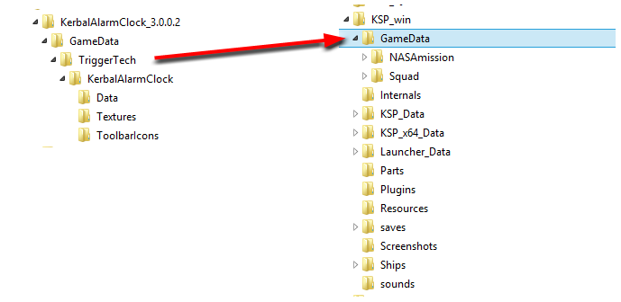
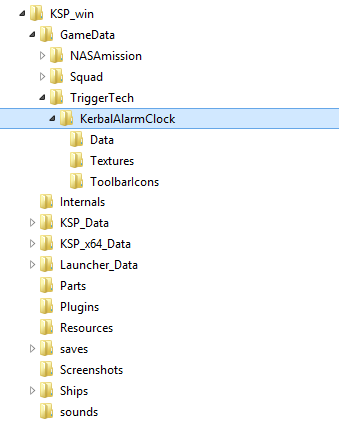
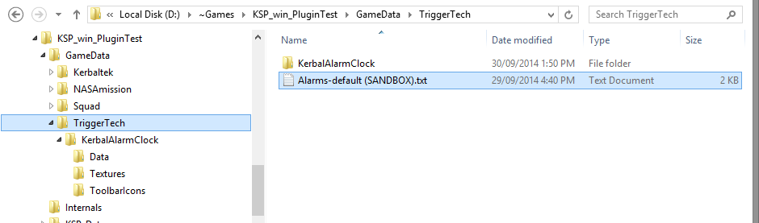
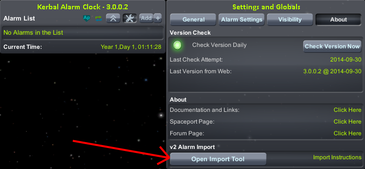
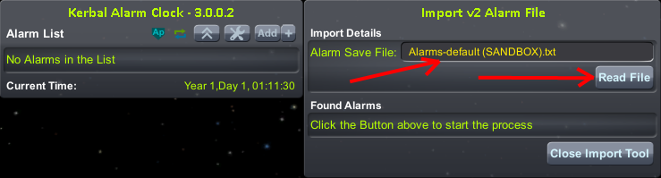
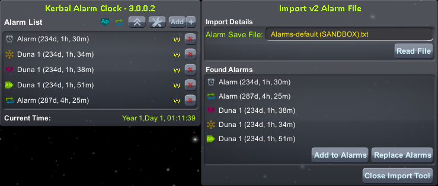

There are two things that are important to note when upgrading from v2 to v3
If you wish to import your Alarms from v2 then you will need to save the alarms file before removing v2. There is a tool provide in v3 and you will find instructions below under Importing v2 Alarms
If you are upgrading from v2 please ensure you read the Importing v2 Alarms Instructions before proceeding so you dont overwrite your alarms file
Take the downloaded file and extract it to a temporary location. You will end up with a folder that looks like the below:

The first step to installing an addon is to locate the KSP folder in your computer. This is where KSP keeps all of its files, including your game saves and screenshots. The KSP folder is located where you unzipped it when you first downloaded the game. The folder looks like the below:

Simply copy the files from the GameData source into the GameData folder in the KSP Game folder. As shown below:
Your Game folder will now look like this. And you should be able to start KSP and use the Plugin
The path they shoudl be in is below, but the easiest way to find these is to search the TriggerTech folder for "Alarms*", and you can then make a copy of these.
<KSP_OS>\GameData\TriggerTech\KerbalAlarmClock\PluginData\KerbalAlarmClock
Copy these somewhere else for now
Delete the existing KerbalAlarmClock Folder in TriggerTech and install v3 - The Steps are above under Installation Instructions
Place your old alarm files inside the TriggerTech Folder - I just put em in the root to save time
In KSP, load your save file and open the Alarm Clock. Go to Settings and the About tab where you will find an Open Import Tool button
You shoudl see the name of your save file listed and a Read File button
You should see a list of all the alarms that were in the save file before and if you hover over one a tooltip shows the notes.
Click on the Add to Alarms button to add to any alarms that you may have made before starting this, or Replace Alarms to replace whats there.

You should now see the alarms in the state you were after. Dont forget that these are saved in the save file now
